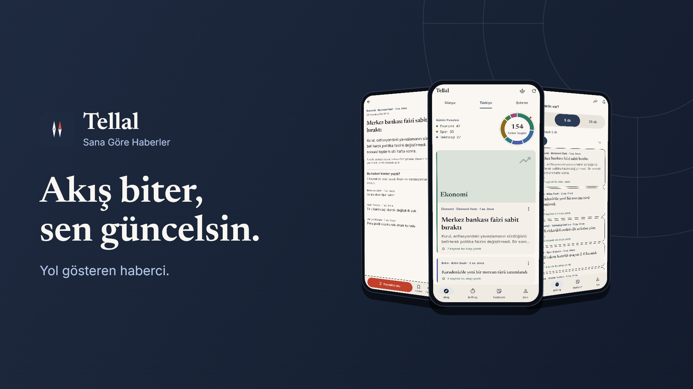
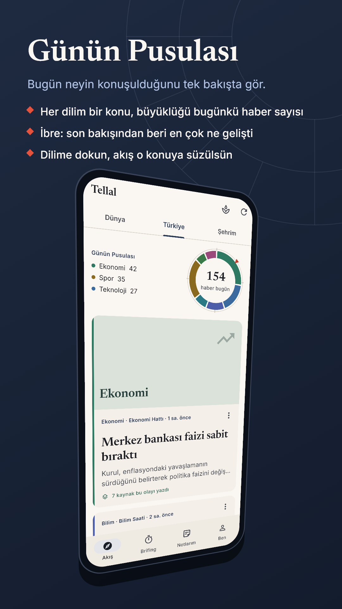
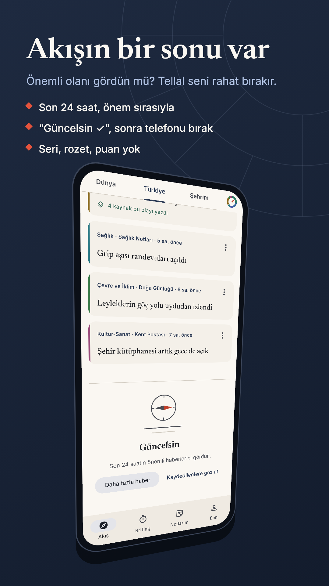
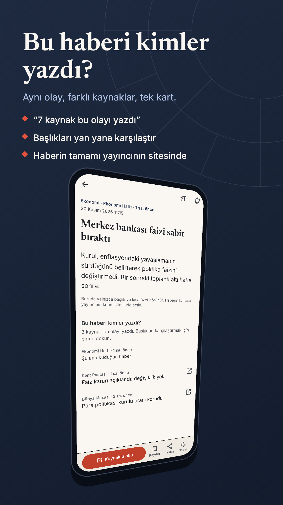
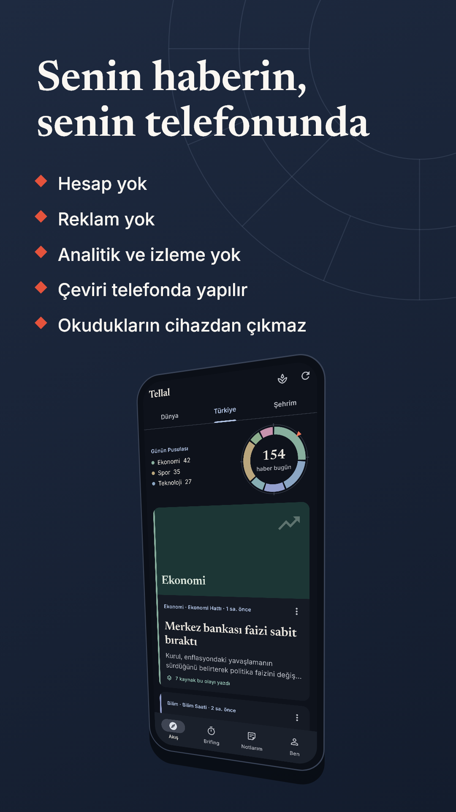

Akış biter, sen güncelsin.
Tellal, dünyanın, Türkiye'nin ve şehrinin haberlerini tek yerde toplar, önemli olanı gösterir ve bir yerde durur. Hesap yok, reklam yok, izleme yok.

- Günün Pusulası: bugün hangi konuda ne kadar haber var, ibre son bakışından beri en çok neyin geliştiğini gösterir.
- Akışın bir sonu var: son 24 saat, önem sırasıyla; sonunda “Güncelsin ✓”.
- Bu haberi kimler yazdı? Aynı olayı yazan yayıncılar tek kartta, başlıklar yan yana.
- Şehrin tellalı: hava, namaz vakitleri ve belediyenin resmî duyuruları.
- Gizlilik: okudukların telefonunda kalır; çeviri bile telefonda yapılır.



